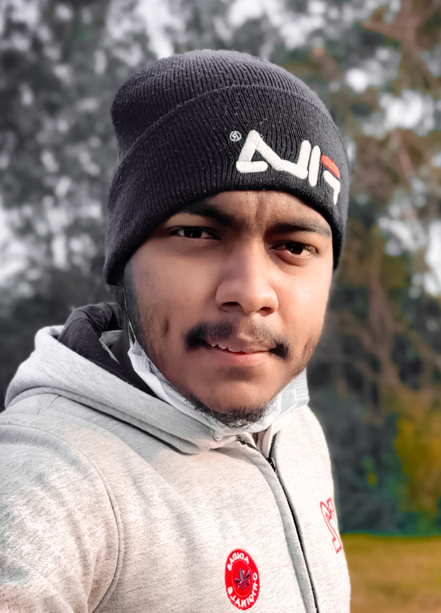

- Engineered real-time Trip ETA microservices and geospatial data queries to optimize delivery routing accuracy for thousands of daily active users.

Open to opportunities
> hello_world_
I'm Md. Rakibul Kabir
const role = Backend Engineer|
Software engineer at Foodi Express building real-time ETA and geospatial services in Go. I design APIs, ship distributed systems and put LLMs to work in real products.
// who am i
type Engineer struct {
Name string
Role string
Company string
Stack []string
Building []string
OpenToWork bool
}
var me = Engineer{
Name: "Md. Rakibul Kabir",
Role: "Software Engineer",
Company: "Foodi Express",
Stack: []string{
"Go", "TypeScript", "PostgreSQL",
"gRPC", "Redis", "Docker",
},
Building: []string{
"real-time Trip ETA",
"geospatial routing (OSRM)",
"LLM / RAG apps",
},
OpenToWork: true,
}1000sdaily users served by ETA services
150+API connectors built
600+problems solved (CP)
3engineering roles in a year
01 // About
Software Engineering graduate from SUST with hands-on experience in full-stack development, backend systems and AI-driven applications. Strong foundation in API design, databases, distributed systems and problem solving. I learn fast and enjoy shipping real-world products used at scale.
Day to day I work on real-time ETA microservices, routing engines and geospatial queries.
Education
Location
B.Sc. in Software Engineering
Shahjalal University of Science and Technology, Sylhet
Mar 2022 – Nov 2025 · CGPA 3.50 / 4.00
Location
Uttara, Dhaka, Bangladesh
02 // Experience
- Developed an ETA service for BD routing, enabling more accurate travel-time estimation.
- Integrated the OSRM engine and services like routing and distance matrix to support geospatial features.
- Configured routes, services and upstreams in Apache APISIX to support API gateway traffic.
Full Stack Software Engineer – Gen AI (Intern)
FlowGenX AI · San Francisco, USA (Remote) · Connectivity Team- Built 150+ runtime connectors, enabling seamless integration with third-party APIs and services.
- Developed workflow automation for iPaaS so businesses can automate routine tasks.
- Worked on connector architecture, API/webhook integrations and authentication flows including OAuth.
03 // Projects
Niye Jao Ride Sharing
↗Location-aware ride-sharing backend in Go microservices with geospatial rider matching via PostGIS and road-network routing with OSRM. Concurrent seat booking, ride lifecycle state, idempotent operations, rate limiting and distributed tracing (OpenTelemetry, Prometheus, Grafana, Loki, Tempo).
- Go
- PostgreSQL
- PostGIS
- OSRM
- Redis
- OpenTelemetry
C/C++ programming learning platform that uses LLMs for interactive learning assistance. OpenAI API for user queries, NextAuth.js with Mongoose for auth and user data.
- Next.js
- TypeScript
- ShadCN
- OpenAI SDK
- MongoDB
Order Tracking System
↗Microservices system with 3 services communicating over gRPC and RabbitMQ. Elasticsearch powers full-text search and real-time analytics in the Analytics service.
- Go
- gRPC
- PostgreSQL
- Elasticsearch
- DDD
AI-powered editor for creating notes and answering questions from PDFs using a RAG pipeline, with real-time collaboration and co-editing through Liveblocks.
- Next.js
- LangChain
- Liveblocks
- Gemini API
- Tiptap
- Convex
More projects
Campus-exclusive social platform: follow friends, post to a feed and use a chatbot. Redux state, custom hooks, industry-style controllers.
- React
- Node.js
- Express
- Redux
- MongoDB
- Cloudinary
University resource hub with REST API, Cloudinary storage, dynamic routing, Context API, and admin, auth and profile modules.
- Next.js
- MongoDB
- Cloudinary
- NextAuth
Doctor appointment booking system.
- Next.js
- JavaScript
- MongoDB
Hospital Management System
CodeHealthcare management system for patient records and appointment scheduling.
- React
- SQL
- Tailwind
- Express
- Node.js
SMS Spam Classification
CodeMachine-learning SMS spam classifier with a Streamlit interface.
- Streamlit
- scikit-learn
- pandas
- NumPy
- matplotlib
Energy Demand Forecasting
CodeTime-series forecasting of energy demand from historical consumption data.
- Python
- scikit-learn
- pandas
- NumPy
- matplotlib
Visual Chat
CodeReal-time video chat app with video calls via the Zego Cloud API.
- Java
- Zego Cloud API
Campus Connect
CodeChat platform connecting students, faculty and staff, with event management, academic resource sharing and campus news.
- Java
- Firebase
- Firestore
Chat App with Socket.io
CodeReal-time messaging with instant delivery and online status.
- Socket.io
- Java
- Express
- SQL
Car Driving Game
CodeCar racing game with physics, multiple tracks, vehicle options, collision detection and smooth controls.
- C++
- SFML
YouTube Clone
CodeVideo streaming platform replica with responsive design and player controls.
- HTML
- CSS
- JavaScript
Responsive personal portfolio with animations and theme switching.
- HTML5
- CSS3
- JavaScript
Added by you
Other
Research on Prompting Techniques (ongoing) — analysing Few-Shot and CoT prompting under an IICT faculty advisor to improve student learning.
Programs & events — participated in UIHP and PDS EDGE; contributed to Technovent.
04 // Skills
Languages
- Go
- C++
- Python
- Java
- JavaScript
- TypeScript
Frontend
- React
- Next.js
- Tailwind CSS
Backend & APIs
- Node.js
- FastAPI
- REST
- gRPC
AI
- LLMs
- RAG
- LangChain
- MCP
- Prompt Engineering
Databases
- PostgreSQL
- MySQL
- MongoDB
Systems & Tools
- Grafana
- RabbitMQ
- Elasticsearch
- Docker
- Linux
- Git
- Apache APISIX
Problem solving
- 600+ problems solved on competitive programming platforms
Let’s build something.
Open to opportunities and interesting problems. The inbox is always open.
- Edu mailrakibul51@student.sust.edu
- WhatsApp+880 1888 166570